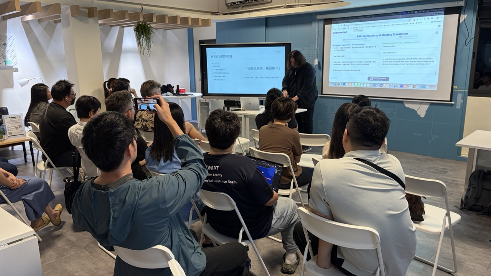

01
Hauke 浩克
用 AI 開發工具，以及工具型產品的市場經驗
Hauke 用 AI 開發了多個工具類程式，包括 freemium 的 Google Workspace 外掛，其中 Text to Table Converter 的下載量接近 4 萬。除了開發，他也分享了這類網路工具在市場和行銷上的經驗。常在 Google Docs 或 Gmail 裡做表格的話，可以試試看。

七月有四位講者，主題從工具型產品、醫療、穿搭到學術寫作。
Hauke 用 AI 開發了多個工具類程式，包括 freemium 的 Google Workspace 外掛，其中 Text to Table Converter 的下載量接近 4 萬。除了開發，他也分享了這類網路工具在市場和行銷上的經驗。常在 Google Docs 或 Gmail 裡做表格的話，可以試試看。
Allian 參與花蓮一家大型醫院的計畫，用 AI 改善 SDM（Shared Decision Making），也就是病人和醫護人員一起參與醫療決策、取得共識的過程。他推薦了兩個 skill：Grill Me 會反覆追問你的計畫，直到每個分支都講清楚；Improve Codebase Architecture 會掃描現有程式碼，找出可以改善的地方，產出報告後依你的選擇進行。
Tina 把衣櫃裡的衣服和品牌告訴 Claude，請它先排好一整週的穿搭。有特別的約會可以另外安排，也可以指定想參考哪位偶像的風格。下面是她用來產生風格設定檔的提示詞，可以直接拿去試。
Toby 用 Claude 協助把論文寫得更嚴謹，同時守住專業和學術誠信。他也示範了用 Claude 協助規劃救災演練的流程，並推薦一組學術寫作與研究用的 skills。

